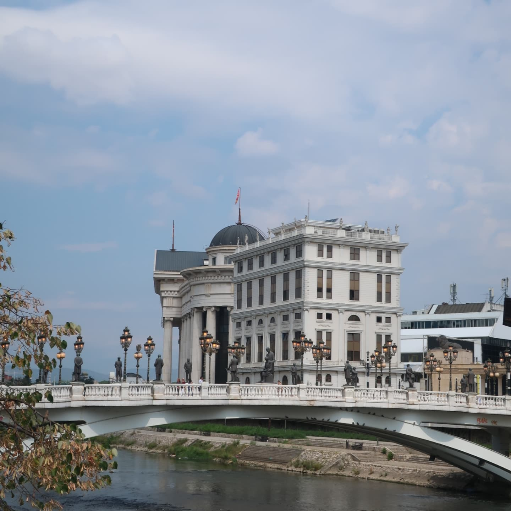
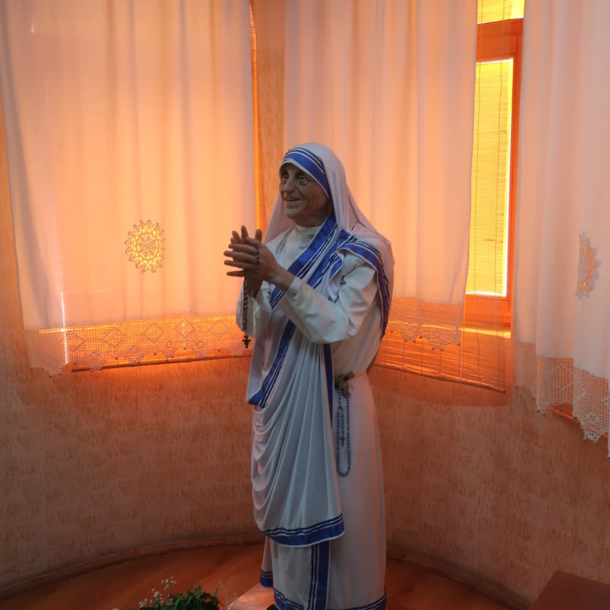
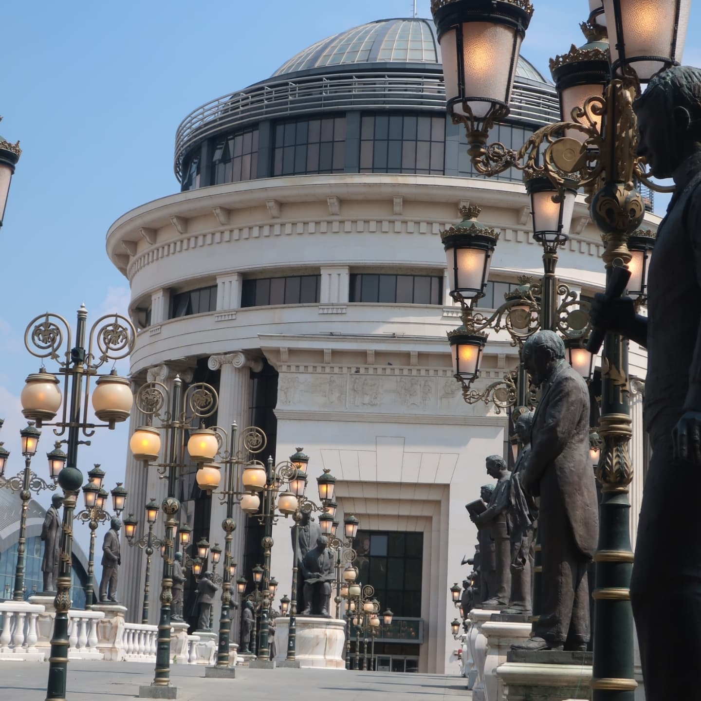
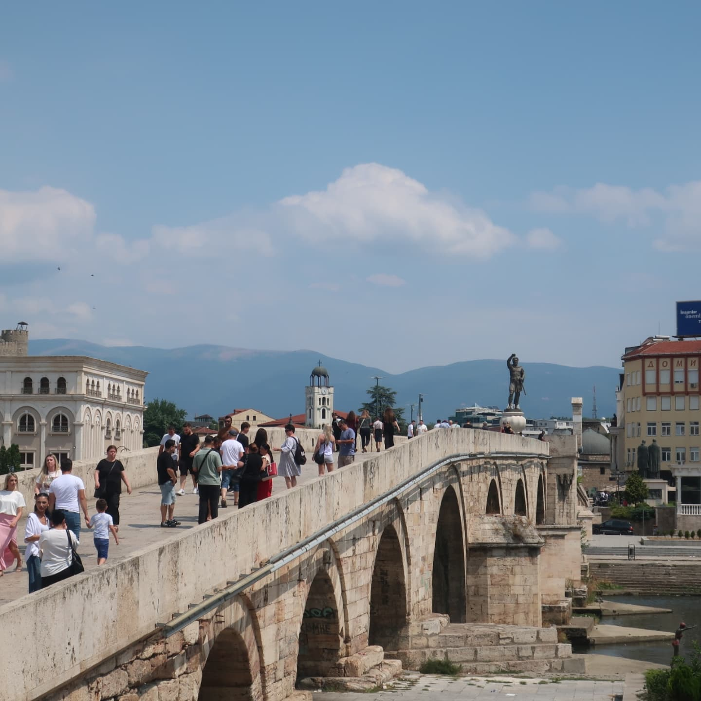
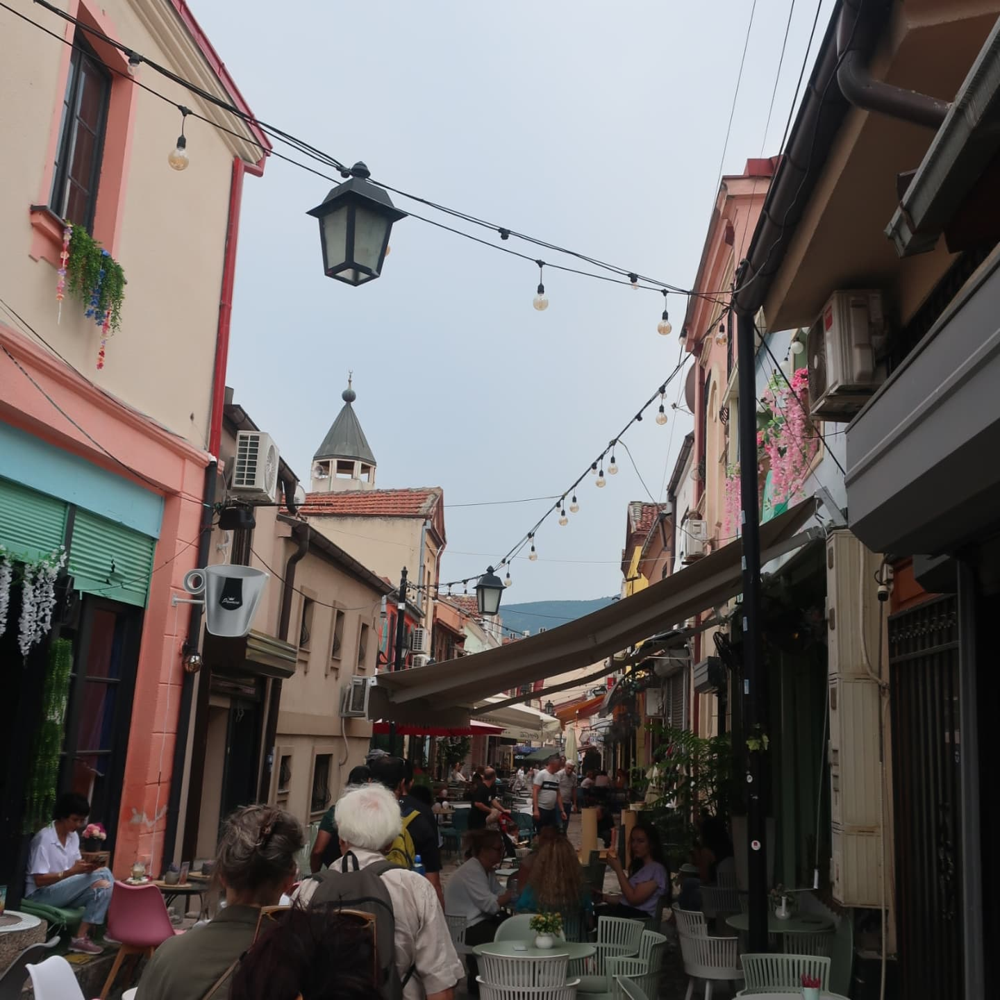
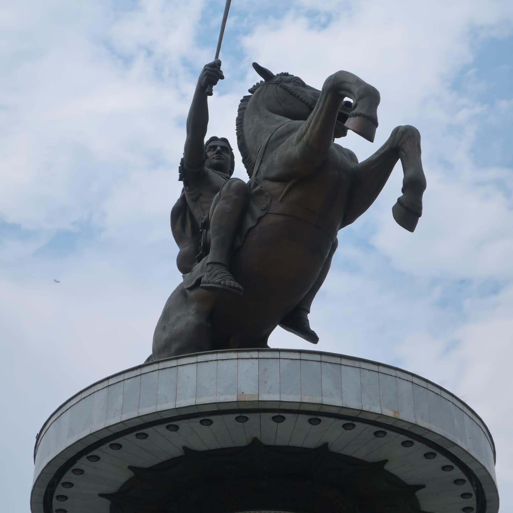
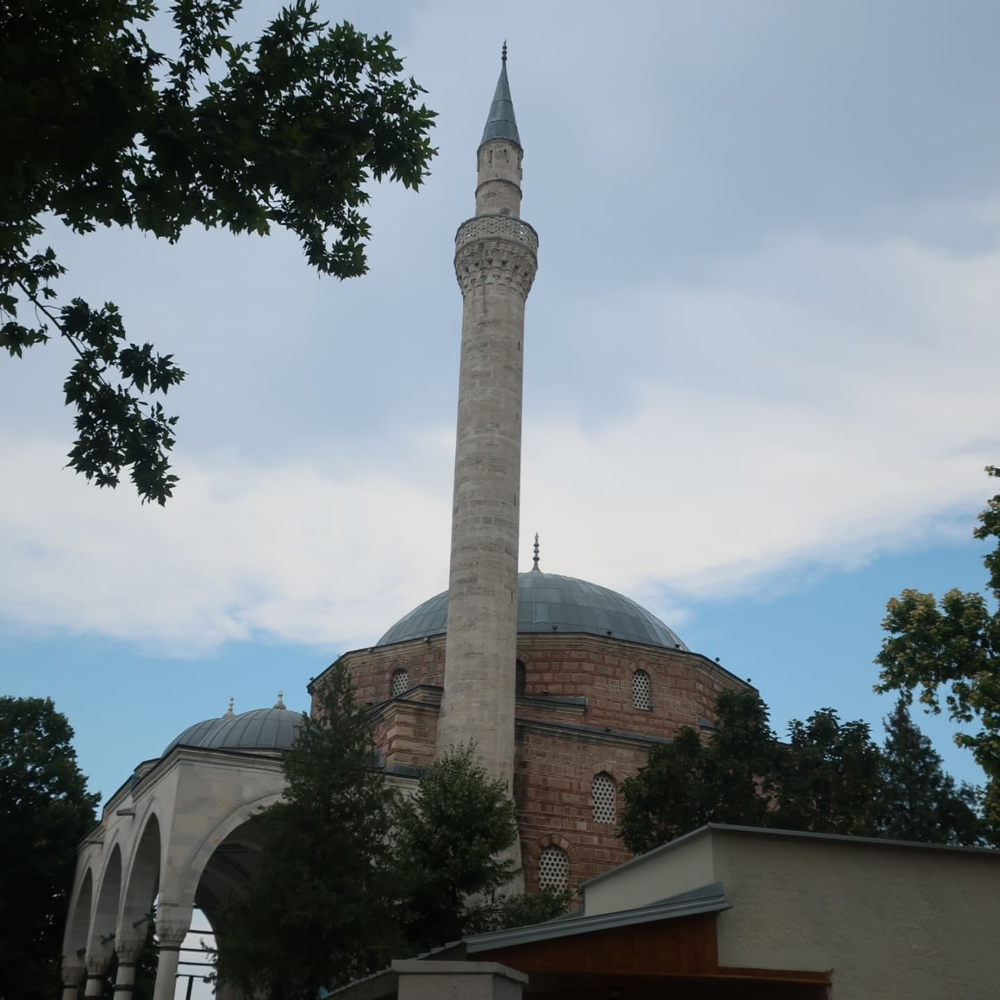
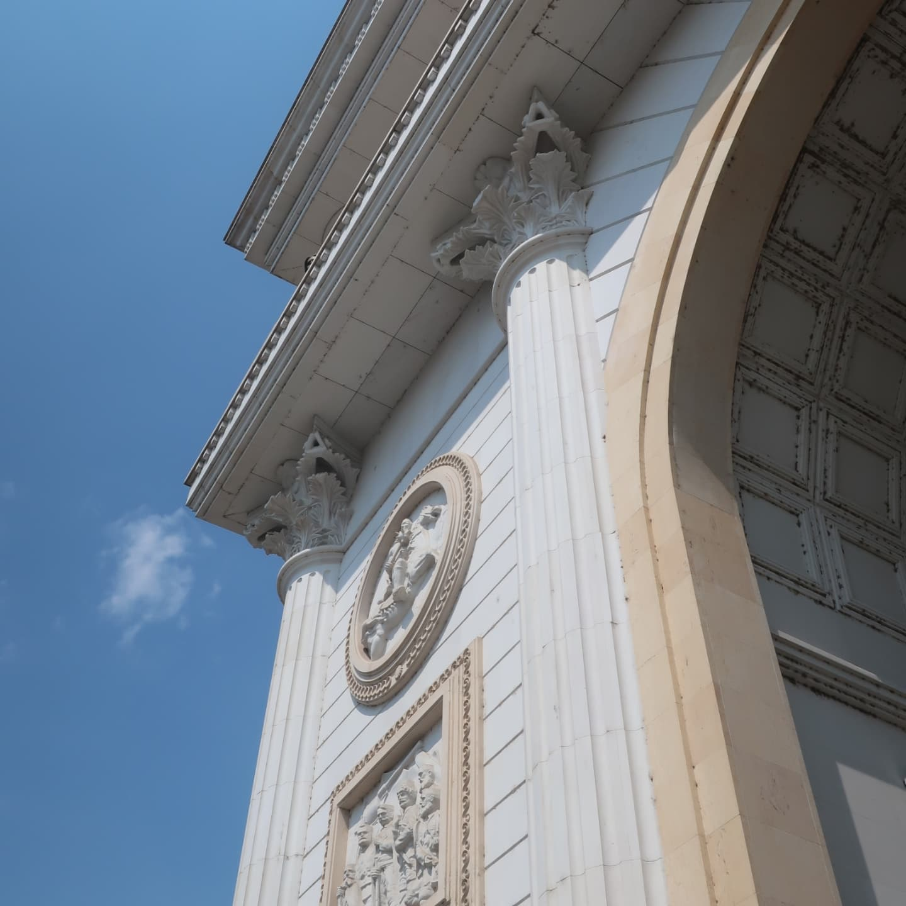

A Day in Skopje, North Macedonia

As part of our Balkan adventure, we dedicated a full day to exploring Skopje, the capital of North Macedonia. The city is a fascinating blend of ancient heritage and ambitious modern reinvention, where layers of Ottoman, Byzantine, and Yugoslav history coexist with bold architectural projects of recent decades.
We started in the city center, a place that immediately strikes the visitor with its oversized statues, neoclassical-style facades, and monumental buildings constructed as part of the Skopje 2014 project. The colossal statue of Alexander the Great on horseback dominates Macedonia Square, surrounded by fountains and illuminated at night in dramatic fashion. Other statues and monuments, some controversial for their sheer scale and symbolic weight, line the riverbanks and bridges, making the city center feel like an open-air museum of national identity.
Crossing into the Old Bazaar, the atmosphere shifted completely. This vibrant quarter, one of the oldest in the Balkans, is a living remnant of the Ottoman era, with narrow cobblestone alleys, caravanserais, mosques, and bustling shops. The smell of strong coffee, spices, and grilled kebabs filled the air, while artisans displayed handmade crafts and jewelry. It was easy to lose ourselves in its authentic, historic charm.
We also stopped at the Mother Teresa Memorial House, a small yet meaningful space dedicated to the life and legacy of the Nobel laureate, who was born in Skopje. The museum combines photos, personal items, and reflections on her humanitarian work, adding a human and spiritual layer to our visit.
Later, we climbed up to the Kale Fortress (Skopje Castle), which overlooks the city from a strategic hill. Though partly in ruins, its walls and towers offered sweeping views of Skopje, the Vardar River, and the mountains that frame the valley. Standing there, it was easy to appreciate the city’s crossroads position in Balkan history.
Our day in Skopje revealed a city of striking contrasts: the modern and sometimes extravagant monuments of the 21st century, the deep-rooted Ottoman and Byzantine heritage of the bazaar and fortress, and the legacy of figures like Mother Teresa. Though compact, Skopje left us with a vivid impression of a capital constantly negotiating its past, present, and future.








 Bordeaux
Bordeaux
 Tallin & Riga Christmas Markets
Tallin & Riga Christmas Markets
 Barcelona, Vic & Girona
Barcelona, Vic & Girona